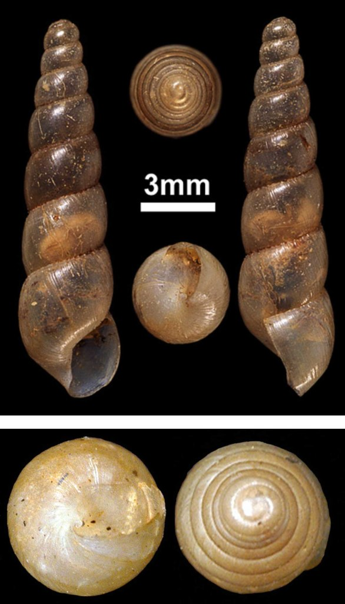

Другие виды
- Subulina Octona / Субулина Октона
Subulina Octona - это не самый примечательный представитель брюхоногих, однако он является видом, который нашел свое место в наших террариумах и в наших сердцах. Уход за ними не составляет никакого труда, да и места им нужно совсем немного, а живут целыми колониями. Любители макромира оценят.
Основные параметры содержания.
Температура: 23-28°C.
Влажность: 70-90%.
Так как Octona живёт колонией: 1 литр на 15-30 особей.
В качестве грунта: любой из разрешенных +сфагнум/мох, опад.
Обязательные дополнения: нет / лишайник.
Обязательные подкормки: кальцесмесь: да (в грунт) / растительный белок: нет / животный белок: нет.
Описание вида.
Ареал:
Subulina Octona покорила большую часть тропических лесов по всему миру. Южная часть Америки; южные части Европы; прибрежные штаты США; зелёные страны Азии по типу Тайланда; почти вся Австралия, и часть лесов, которые относятся к Карибским и Тихоокеанским островам. Конечно, это не финальный список, но думаю, что и так понятно, на сколько они распространены.
Размеры раковины:
В приличном возрасте могут иметь до 12 витков. Размер обычно не больше 3,5 сантиметров во взрослом состоянии.
Особенности окраса раковины:
У некоторых представителей подвида Octona, первые витки могут не оставаться светлыми, как на фото, предоставленных ниже (1-4), а темнеть, от желтого до тёмно-желтого и даже коричневого (5).
Продолжительность жизни:
Представители семейства Subulinidae живут достаточно недолго - до 2 лет.
Половое созревание / кладки:
Половозрелой Octona становятся в возрасте примерно двух месяцев, когда достигает роста около полутора сантиметров. Так как улитки сами по себе небольшого размера, их максимум в репродуктивной функции - 10 яиц за раз. Причём их даже можно спокойно увидеть через стенки ракушки. Обычно откладывают от 4 до 10 яиц в грунт, и буквально через 2 недели вылупляются полупрозрачные улитята, которые не превышают и 1.5 миллиметров. Инкубировать кладки не нужно, они сами спокойно и довольно успешно размножаются и без вашей помощи.
Питание:
Являются практически всеядными. Съедят практически любой овощ/фрукт (естественно из тех, которые можно), траву, грибы, лишайник, при этом, не побрезгуют и подгнившей едой, так что не торопитесь убирать за ними остатки.
Интересные факты и ответы на некоторые вопросы:
Чем же обусловлена такая бурная плодовитость? В природе - у этих улиток много соседей, норовящих ими полакомиться. А если взять в придачу тот факт, что они очень неприхотливы, и в природе, питаются практически всем, исполняя роль этаких санитаров, наравне с мокрицами, то мы и получаем тот самый огромный ареал и через мерную плодовитость.
Как контролировать их количество? Вы вряд ли сможете отыскать их яйца в грунте, а тем более все. Единственный способ - время от времени просто выбрасывать часть грунта, вместе и яйцами и заменять на новый.
Автор: Starcaller Forever.
 |
||
 |
||
 |

|
|

|